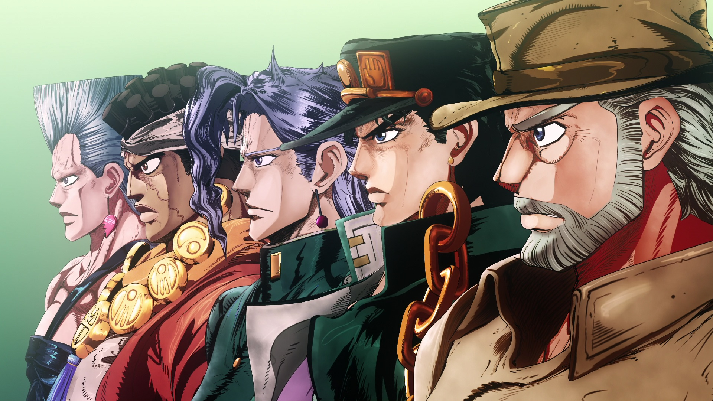
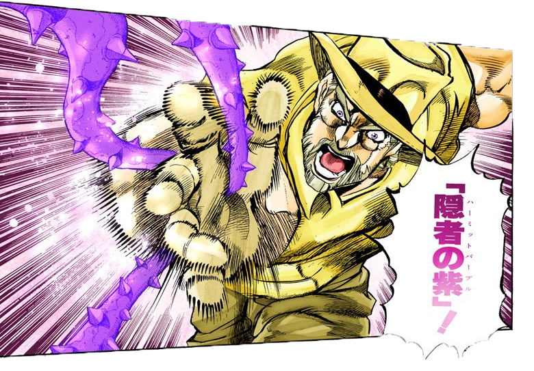
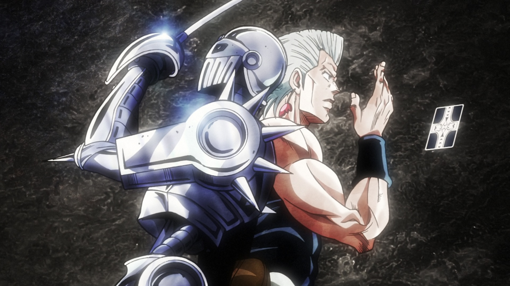
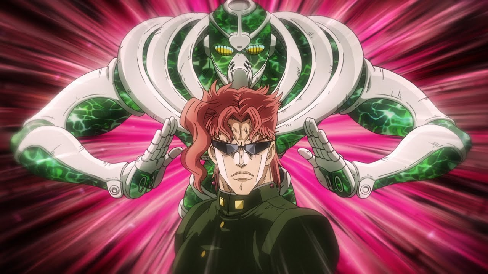
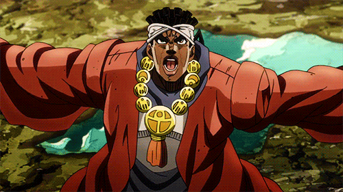
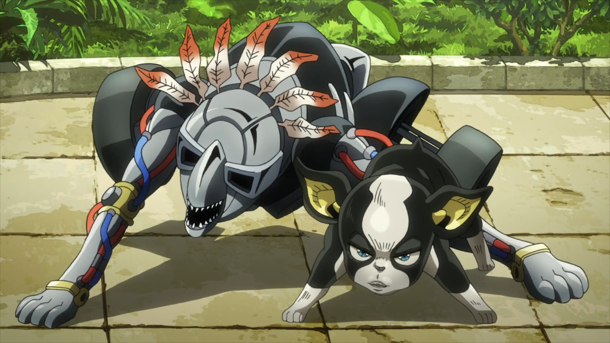

–í—Å–ø–æ–º–æ–≥–∞—Ç–µ–ª—å–Ω—ã–µ —Å—Ç—Ä–∞–Ω–∏—Ü—ã
–ö—Ä–∞—Ç–∫–∏–π —Ä–∞–∑–±–æ—Ä –ø–µ—Ä—Å–æ–Ω–∞–∂–µ–π 3-–µ–π —á–∞—Å—Ç–∏ Jojo`s Bizarre Advanture

Jojo's Bizarre Adventure,Stardust Crusaders —Å—Ç–∞–ª–∞ —Ç—Ä–µ—Ç—å–µ–π —á–∞—Å—Ç—å—é –∏–∑ —Å–µ—Ä–∏–∏ Jojo. –í–ø–µ—Ä–≤—ã–µ –æ–Ω–∞ –±—ã–ª–æ –∞–¥–∞–ø—Ç–∏—Ä–æ–≤–∞–Ω–∞ 19 –Ω–æ—è–±—Ä—è 1993 –≥–æ–¥–∞ –ø–æ 18 –Ω–æ—è–±—Ä—è 1994 –≥–æ–¥–∞.–í 2014 –≥–æ–¥—É –±—ã–ª –≤—ã–ø—É—â–µ–Ω–∞ –ø–æ—Å–ª–µ–¥–Ω—è—è –≤–µ—Ä—Å–∏—è –∞–Ω–∏–º–µ, –Ω–æ –¥–æ —Å–∏—Ö –ø–æ—Ä —É —Å–µ—Ä–∏–∞–ª–∞ –æ—Å—Ç–∞—ë—Ç—Å—è –º–Ω–æ–∂–µ—Å—Ç–≤–æ —Ñ–∞–Ω–∞—Ç–æ–≤ –ø–æ –≤—Å–µ–º—É –º–∏—Ä—É. –≠—Ç–æ—Ç —¿…“ —Å–æ–∑–¥–∞–Ω –¥–ª—è –ª—é–¥–µ–π –Ω–∞—á–∏–Ω–∞—é—â–∏—Ö —Å–º–æ—Ç—Ä–µ—Ç—å Stardust Crusaders. –Ø –ø–æ–ø—ã—Ç–∞–ª—Å—è —Å–¥–µ–ª–∞—Ç—å –µ–≥–æ –±–µ–∑ —Å–ø–æ–π–ª–µ—Ä–æ–≤.
–î–∂–æ—Ç–æ—Ä–æ –ö—É–¥–∂–æ
Джотаро родился в 1970 году, он — сын японского музыканта Садао Куджо и Холли Куджо, дочки Джозефа Джостара. Его рост составляет 195 сантиметров.Джотаро немногословен, спокоен и проницателен.Кроме того, он никогда не лезет на рожон и всегда оценивает ситуацию и окружающую обстановку.Крылатой фразой персонажа является «Ярэ Ярэ Дадзэ», которая имеет широкое значение и может переводится, как «вот это да»/«ну и ну»/«погоди».

–°—Ç–µ–Ω–¥ –î–∂–æ—Ç–∞—Ä–æ –Ω–∞–∑—ã–≤–∞–µ—Ç—Å—è Star Platinum –∏ –Ω–∞–∑–≤–∞–Ω–∞ –≤ —á–µ—Å—Ç—å –∫–∞—Ä—Ç—ã —Ç–∞—Ä–æ –ó–≤–µ–∑–¥–∞. –ü—Ä–∏ –∞—Ç–∞–∫–µ —Å—Ç–µ–Ω–¥ –∫—Ä–∏—á–∏—Ç: ORA ORA ORA!!!!, —á—Ç–æ —Å—Ç–∞–ª–æ —Å–≤–æ–µ–æ–±—Ä–∞–∑–Ω—ã–º –∏–Ω—Ç–µ—Ä–Ω–µ—Ç-–º–µ–º–æ–º.–Ø–≤–ª—è–µ—Ç—Å—è –æ–¥–Ω–∏–º –∏–∑ —Å–∏–ª—å–Ω–µ–π—à–∏—Ö –∏–∑–≤–µ—Å—Ç–Ω—ã—Ö —Å—Ç–µ–Ω–¥–æ–≤ –∏ —è–≤–ª—è–µ—Ç—Å—è —Å—Ç–µ–Ω–¥–æ–º —Å —Å–∞–º—ã–º –±–æ–ª—å—à–∏–º –ø–æ—Ç–µ–Ω—Ü–∏–∞–ª–æ–º. –û–±–ª–∞–¥–∞–µ—Ç —Å–≤–µ—Ä—Ö–∑–≤—É–∫–æ–≤–æ–π —Å–∫–æ—Ä–æ—Å—Ç—å—é, –º–æ–∂–µ—Ç –æ—Å—Ç–∞–Ω–∞–≤–ª–∏–≤–∞—Ç—å –ø—É–ª–∏ –∏–ª–∏ –æ—Ç–±–∏—Ç—å –º–Ω–æ–≥–æ—Ç–æ–Ω–Ω—ã–π –æ–±—ä–µ–∫—Ç. –í –∫—É–ª–∞—á–Ω–æ–º –±–æ—é –µ–º—É –Ω–µ—Ç —Ä–∞–≤–Ω—ã—Ö. –¢–∞–∫–∂–µ –æ–Ω —Å–ø–æ—Å–æ–±–µ–Ω –æ—Å—Ç–∞–Ω–∞–≤–ª–∏–≤–∞—Ç—å –≤—Ä–µ–º—è –Ω–∞ –Ω–µ—Å–∫–æ–ª—å–∫–æ —Å–µ–∫—É–Ω–¥.
–î–∂–æ–∑–µ—Ñ –î–∂–æ—Å—Ç–∞—Ä
Джозеф - второй наиболее часто появляющийся ДжоДжо в серии после своего внука Джотаро Куджо. Джозеф появляется в трёх частях Невероятных Приключений ДжоДжо:Battle Tendency,Stardust Crusaders,Stardust Crusaders.В Stardust Crusaders Джозеф — уже постаревший персонаж. У него поседели волосы, но он по прежнему сохраняет атлетическую фигуру, хотя уже не так силён и остроумен, как в годы своей молодости. Наоборот, он часто демонстрирует легкомыслие, и тем не менее остаётся крайне важным союзником Крестоносцев.
Его стенд — Hermit Purple, назван в честь карты Отшельник и представляет собой колючие лозы, способные обездвиживать или душить противника, также стенд способен указывать место цели, передавать изображения и мысли на телевизор или фотоаппарат. Также Джозеф стпособен использовать силу солнца- Хамон .
–ñ–∞–Ω –ü—å–µ—Ä –ü–æ–ª—å–Ω–∞—Ä–µ—Ñ
–ñ–∞–Ω –ü—å–µ—Ä –ü–æ–ª—å–Ω–∞—Ä–µ—Ñ - —Ñ—Ä–∞–Ω—Ü—É–∑ —Å —Ç—è–∂—ë–ª–æ–π –∏—Å—Ç–æ—Ä–∏–µ–π. –û–Ω –æ—Ç–ø—Ä–∞–≤–ª—è–µ—Ç—Å—è –≤ –ø—É—Ç–µ—à–µ—Å—Ç–≤–∏–µ —Å –î–∂–æ—Ç–∞—Ä–æ –∏ –î–∂–æ–∑–µ—Ñ–æ–º, —á—Ç–æ–±—ã –æ—Ç–æ–º—Å—Ç–∏—Ç—å –∑–∞ —Å–≤–æ—é —Å–µ—Å—Ç—Ä—É, —É–±–∏—Ç—É—é —á–µ–ª–æ–≤–µ–∫–æ–º —Å –¥–≤—É–º—è –ø—Ä–∞–≤—ã–º–∏ —Ä—É–∫–∞–º–∏. –ù–æ –ø–µ—Ä–µ–¥ —Ç–µ–º, –∫–∞–∫ –ø—Ä–∏—Å–æ–µ–¥–∏–Ω–∏—Ç—å—Å—è –∫ –ö—Ä–µ—Å—Ç–æ–Ω–æ—Å—Ü–∞–º, –ñ–∞–Ω –ü—å–µ—Ä –±—ã–ª –ø—Ä–∏—Å–ø–µ—à–Ω–∏–∫–æ–ª –≥–ª–∞–≤–Ω–æ–≥–æ –∑–ª–æ–¥–µ—è - –î–∏–æ . –ß—Ç–æ–±—ã —É–ø—Ä–∞–≤–ª—è—Ç—å –ü–æ–ª—å–Ω–∞—Ä–µ—Ñ–æ–º –∑–ª–æ–¥–µ–π –≤—Å–∞–¥–∏–ª –≤ –Ω–µ–≥–æ –ø–∞—Ä–∞–∑–∏—Ç–∞, —É—Å–ø–µ—à–Ω–æ –≤—ã—Ç—è–Ω—É—Ç–æ–≥–æ –î–∂–æ—Ç–æ—Ä–æ. –ñ–∞–Ω –ü—å–µ—Ä - —à—É–º–Ω—ã–π –≤–µ—Å–µ–ª—å—á–∞–∫.
–°—Ç–µ–Ω–¥ –ü–æ–ª—å–Ω–∞—Ä–µ—Ñ–∞ - Silver Chariot. –û—á–µ–Ω—å –º–æ—â–Ω—ã–π —Å—Ç–µ–Ω–¥ –±–ª–∏–∂–Ω–µ–≥–æ —Ä–∞–¥–∏—É—Å–∞ –¥–µ–π—Å—Ç–≤–∏—è, –∫–æ—Ç–æ—Ä—ã–π –≤ –ø–µ—Ä–≤—É—é –æ—á–µ—Ä–µ–¥—å —Å—Ä–∞–∂–∞–µ—Ç—Å—è —Å —Ä–∞–ø–∏—Ä–æ–π, –∫–æ—Ç–æ—Ä–æ–π –æ–Ω –æ—Å–Ω–∞—â–µ–Ω. –û–Ω –æ—á–µ–Ω—å –±—ã—Å—Ç—Ä, —Ç–æ—á–µ–Ω, –æ–¥–Ω–∞–∫–æ –±—Ä–æ–Ω—è, –∑–∞—â–∏—â–∞—é—â–∞—è —Å—Ç–µ–Ω–¥, –∑–∞–º–µ–¥–ª—è–µ—Ç –µ–≥–æ.–£ Silver Chariot –µ—Å—Ç—å —è–≤–Ω–∞—è —Å–ª–∞–±–æ—Å—Ç—å: –æ–Ω –Ω–µ –º–æ–∂–µ—Ç –≤–∏–¥–µ—Ç—å —Ç–æ, —á—Ç–æ –Ω–µ –≤–∏–¥–∏—Ç –µ–≥–æ –ø–æ–ª—å–∑–æ–≤–∞—Ç–µ–ª—å, –∏ –¥–µ–ª–∞–µ—Ç –µ–≥–æ —Å–ª–∞–±—ã–º, –µ—Å–ª–∏ –ü–æ–ª—å–Ω–∞—Ä–µ—Ñ—Ñ –∫–∞–∫–∏–º-–ª–∏–±–æ –æ–±—Ä–∞–∑–æ–º –Ω–∞—Ö–æ–¥–∏—Ç—Å—è –≤ —Å–ª–µ–ø–æ–π –∑–æ–Ω–µ. –î–æ–ø–æ–ª–Ω–∏—Ç–µ–ª—å–Ω—ã–µ —Å–ø–æ—Å–æ–±–Ω–æ—Å—Ç–∏: —Å–Ω—è—Ç–∏–µ –±—Ä–æ–Ω–∏( —Å–∫–æ—Ä–æ—Å—Ç—å —Å—Ç–µ–Ω–¥–∞ —Å–∏–ª—å–Ω–æ —É–≤–µ–ª–∏—á–∏–≤–∞–µ—Ç—Å—è),—Å—Ç—Ä–µ–ª—å–±–∞ —Ä–∞–ø–∏—Ä–æ–π(–µ–¥–∏–Ω—Å—Ç–≤–µ–Ω–Ω–∞—è –¥–∞–ª—å–Ω—è—è –∞—Ç–∞–∫–∞, –ø—Ä–∏ —ç—Ç–æ–º –æ—á–µ–Ω—å —Ç–æ—á–Ω–∞—è).
–ù–æ—Ä–∏—è–∫–∏ –ö–∞–∫—ë–∏–Ω
–ö–∞–∫—ë–∏–Ω - —è–ø–æ–Ω—Å–∫–∏–π —Å—Ç—É–¥–µ–Ω—Ç, –∫–æ—Ç–æ—Ä–æ–º—É –î–∏–æ –ø—Ä–æ–º—ã–ª –º–æ–∑–≥–∏ –≤–æ –≤—Ä–µ–º—è –±–æ–ª–µ–µ —Ä–∞–Ω–Ω–µ–π –ø–æ–µ–∑–¥–∫–∏ –≤ –ï–≥–∏–ø–µ—Ç, –∏ –æ—Ç–ø—Ä–∞–≤–∏–ª —É–±–∏–≤–∞—Ç—å –î–∂–æ—Ç–∞—Ä–æ –ö—É–¥–∂–æ. –ü–æ—Å–ª–µ –æ—Å–≤–æ–±–æ–∂–¥–µ–Ω–∏—è –æ—Ç –≤–ª–∏—è–Ω–∏—è –î–∏–æ –æ–Ω —Ä–µ—à–∞–µ—Ç –ø—Ä–∏—Å–æ–µ–¥–∏–Ω–∏—Ç—å—Å—è –∫ –î–∂–æ—Ç–∞—Ä–æ –≤ –µ–≥–æ —Å—Ç—Ä–µ–º–ª–µ–Ω–∏–∏ –∫ –ï–≥–∏–ø—Ç—É, —á—Ç–æ–±—ã —Å–ø–∞—Å—Ç–∏ –º–∞—Ç—å –î–∂–æ—Ç–∞—Ä–æ –∏ –Ω–∞–π—Ç–∏ –∏—Å–∫—É–ø–ª–µ–Ω–∏–µ.–ù–æ—Ä–∏–∞–∫–∏ –ö–∞–∫—ë–∏–Ω –≤–ø–µ—Ä–≤—ã–µ –±—ã–ª –ø—Ä–µ–¥—Å—Ç–∞–≤–ª–µ–Ω –∫–∞–∫ –∑–ª–æ–π –∏ –∂–µ—Å—Ç–æ–∫–∏–π –ø–æ–¥—Ä–æ—Å—Ç–æ–∫. –û–¥–Ω–∞–∫–æ –æ–Ω —Ä–∞—Å–∫—Ä—ã–≤–∞–µ—Ç —Å–µ–±—è –∫–∞–∫ –ø—Ä–∞–≤–µ–¥–Ω–æ–≥–æ —á–µ–ª–æ–≤–µ–∫–∞. –ö–∞–∫—ë–∏–Ω –±–µ–∑–∂–∞–ª–æ—Å—Ç–µ–Ω –∫ —Å–≤–æ–∏–º –≤—Ä–∞–≥–∞–º, –Ω–æ –ø—Ä–µ–¥–∞–Ω —Å–≤–æ–∏–º —Å–æ—é–∑–Ω–∏–∫–∞–º. –í –¥–µ—Ç—Å—Ç–≤–µ —É –Ω–µ–≥–æ –±—ã–ª—ã –ø—Ä–æ–±–ª–µ–º—ã —Å –æ–±—â–µ–Ω–∏–µ–º, —Ç–∞–∫ –∫–∞–∫ –æ–Ω –¥—É–º–∞–ª, —á—Ç–æ –æ–¥–∏–Ω –∏–º–µ–µ—Ç —Å—Ç–µ–Ω–¥. –ù–∞ –º–æ–º–µ–Ω—Ç Sturdust Crusaders –µ–º—É –±—ã–ª–æ 17 –ª–µ—Ç.
–ì—É–º–∞–Ω–æ–∏–¥–Ω—ã–π —Å—Ç–µ–Ω–¥ –ö–∞–∫—ë–∏–Ω–∞ –¥–∞–ª—å–Ω–µ–≥–æ –¥–µ–π—Å—Ç–≤–∏—è - Hierophant Green, —Å–ø–æ—Å–æ–±–Ω—ã–π –≤—ã–¥–≤–∏–≥–∞—Ç—å —â—É–ø–∞–ª—å—Ü—ã –∏–ª–∏ —Ä–∞—Å–ø—É—Ç—ã–≤–∞—Ç—å—Å—è –¥–æ —Å–∫—Ä–æ–º–Ω—ã—Ö —Ä–∞–∑–º–µ—Ä–æ–≤, –∞ —Ç–∞–∫–∂–µ –≤—ã–ø—É—Å–∫–∞—Ç—å —à–∫–≤–∞–ª –∂—ë—Å—Ç–∫–∏—Ö —Å–Ω–∞—Ä—è–¥–æ–≤ ("–ò–∑—É–º—Ä—É–¥–Ω—ã–π –≤—Å–ø–ª–µ—Å–∫"). –æ–Ω —á–∞—Å—Ç–æ –ø–æ–∫–∞–∑–∞–Ω –≤—ã–∫—Ä–∏–∫–∏–≤–∞—é—â–∏–º —Å–≤–æ—é —Ñ–∏—Ä–º–µ–Ω–Ω—É—é –∞—Ç–∞–∫—É (–Ω–∞–ø—Ä–∏–º–µ—Ä, "–ò–∑—É–º—Ä—É–¥–Ω—ã–π –≤—Å–ø–ª–µ—Å–∫") –≤ –±–∏—Ç–≤–∞—Ö.
–ú—É—Ö–∞–º–µ–¥ –ê–±–¥—É–ª
–ê–±–¥—É–ª - –¥–æ—Å—Ç–∞—Ç–æ—á–Ω–æ –≤—ã—Å–æ–∫–∏–π —á–µ–ª–æ–≤–µ–∫ —Å—Ä–µ–¥–Ω–µ–≥–æ —Ç–µ–ª–æ—Å–ª–æ–∂–µ–Ω–∏—è. –ü–æ –Ω–∞—Ü–∏–æ–Ω–∞–ª—å–Ω–æ—Å—Ç–∏ –æ–Ω –µ–≥–∏–ø—Ç—è–Ω–∏–Ω, —Å–æ–æ—Ç–≤–µ—Ç—Å—Ç–≤–µ–Ω–Ω–æ –∏–º–µ–µ—Ç —Ç–µ–º–Ω—É—é –∫–æ–∂—É.–ü—Ä–µ–¥—Å—Ç–∞–≤–ª–µ–Ω–Ω—ã–π –∫–∞–∫ –µ–≥–∏–ø–µ—Ç—Å–∫–∏–π –¥—Ä—É–≥ –î–∂–æ–∑–µ—Ñ–∞ –î–∂–æ—Å—Ç–∞—Ä–∞, –æ–Ω –ø—Ä–∏—Å–æ–µ–¥–∏–Ω—è–µ—Ç—Å—è –∫ –≥—Ä—É–ø–ø–µ –≤ –∏—Ö –ø—É—Ç–µ—à–µ—Å—Ç–≤–∏–∏, —á—Ç–æ–±—ã –ø–æ–±–µ–¥–∏—Ç—å –î–∏–æ , –ø—Ä–µ–¥–æ—Å—Ç–∞–≤–ª—è—è –∑–Ω–∞–Ω–∏—è –∏ —Ä–µ–∫–æ–º–µ–Ω–¥–∞—Ü–∏–∏ –æ –≤—Ä–∞–∂–µ—Å–∫–∏—Ö –ø–æ–ª—å–∑–æ–≤–∞—Ç–µ–ª—è—Ö —Å—Ç–µ–Ω–¥–æ–≤ –∏ –º–µ—Å—Ç–Ω—ã—Ö –∫—É–ª—å—Ç—É—Ä–∞—Ö –ø–æ –ø—É—Ç–∏.–ê–±–¥—É–ª –ø–æ–∫–∞–∑–∞–Ω –∫–∞–∫ —Å–µ—Ä—å–µ–∑–Ω—ã–π, –æ—Ç–≤–µ—Ç—Å—Ç–≤–µ–Ω–Ω—ã–π –∏ –≤ —Ü–µ–ª–æ–º –ø—Ä–∞–≤–µ–¥–Ω—ã–π —á–µ–ª–æ–≤–µ–∫.–ê–±–¥—É–ª –æ–±–ª–∞–¥–∞–µ—Ç "—Å–∏–ª—å–Ω—ã–º —á—É–≤—Å—Ç–≤–æ–º –¥–æ–ª–≥–∞ –∏ –≤–µ—Ä–Ω–æ—Å—Ç–∏" –û–Ω –æ—á–µ–Ω—å –ø—Ä–µ–¥–∞–Ω –¥–µ–ª—É –ø–æ–±–µ–¥—ã –Ω–∞–¥ –î–∏–æ –∫–∞–∫ –æ–¥–∏–Ω –∏–∑ –¥–≤—É—Ö –ø–µ—Ä–≤—ã—Ö —á–ª–µ–Ω–æ–≤ –∫–æ–º–∞–Ω–¥—ã.
–ì—É–º–∞–Ω–æ–∏–¥–Ω—ã–π —Å—Ç–µ–Ω–¥ –ê–±–¥—É–ª–∞ - Magician's Red; –æ–Ω —Å–ø–æ—Å–æ–±–µ–Ω –≥–µ–Ω–µ—Ä–∏—Ä–æ–≤–∞—Ç—å —á—Ä–µ–∑–≤—ã—á–∞–π–Ω–æ –º–æ—â–Ω–æ–µ, –Ω–æ –∫–æ–Ω—Ç—Ä–æ–ª–∏—Ä—É–µ–º–æ–µ –ø–ª–∞–º—è.–í –æ—Ç–ª–∏—á–∏–µ –æ—Ç –ø—Ä–∏—Ä–æ–¥–Ω–æ–≥–æ –æ–≥–Ω—è, –∫–æ—Ç–æ—Ä—ã–π –ø–æ–¥–Ω–∏–º–∞–µ—Ç—Å—è –≤–≤–µ—Ä—Ö –∏–ª–∏ —Å–ª–µ–¥—É–µ—Ç –∑–∞ –≤–µ—Ç—Ä–æ–º, –ø–ª–∞–º—è –ø–æ–¥—á–∏–Ω—è–µ—Ç—Å—è —Å–æ–±—Å—Ç–≤–µ–Ω–Ω–æ–π –≤–æ–ª–µ –ê–±–¥—É–ª–∞.
–ò–≥–≥–∏
–ò–≥–≥–∏ - –≥–æ—Ä–æ–¥—Å–∫–æ–π –±—Ä–æ–¥—è—á–∏–π –ø–µ—Å —Å —É–ª–∏—Ü –ù—å—é-–ô–æ—Ä–∫–∞, –∫–æ—Ç–æ—Ä—ã–π –Ω–µ–æ—Ö–æ—Ç–Ω–æ –ø–æ–º–æ–≥–∞–µ—Ç –≥–ª–∞–≤–Ω—ã–º –≥–µ—Ä–æ—è–º –≤ –∏—Ö –ø–æ—Å–ª–µ–¥–Ω–µ–π —ç–∫—Å–ø–µ–¥–∏—Ü–∏–∏ –≤ –ö–∞–∏—Ä.–ò–≥–≥–∏ - –Ω–µ–ø—Ä–∏—è—Ç–Ω–∞—è, –Ω–µ—É–ø—Ä–∞–≤–ª—è–µ–º–∞—è –∏ –≥—Ä—É–±–∞—è —Å–æ–±–∞–∫–∞. –ù–∞–ø—Ä–∏–º–µ—Ä, –µ–º—É –Ω—Ä–∞–≤–∏—Ç—Å—è –∂–µ–≤–∞—Ç—å —á–µ–ª–æ–≤–µ—á–µ—Å–∫–∏–µ –≤–æ–ª–æ—Å—ã, —Ç–∞–∫–∏–º –æ–±—Ä–∞–∑–æ–º –¥–æ—Å—Ç–∞–≤–ª—è—è –ü–æ–ª—å–Ω–∞—Ä–µ—Ñ—Ñ–∞ –≤–æ –≤—Ä–µ–º—è –µ–≥–æ –≤—Å—Ç—É–ø–∏—Ç–µ–ª—å–Ω–æ–π –∞—Ä–∫–∏. –ü–æ–Ω–∞—á–∞–ª—É –ò–≥–≥–∏ –ø–æ –ø–æ–Ω—è—Ç–Ω—ã–º –ø—Ä–∏—á–∏–Ω–∞–º –±–µ–∑—Ä–∞–∑–ª–∏—á–µ–Ω –∫ —Ü–µ–ª–∏ –≥—Ä—É–ø–ø—ã –î–∂–æ—Å—Ç–∞—Ä–∞ - –æ—Å—Ç–∞–Ω–æ–≤–∏—Ç—å –î–∏–æ , –Ω–µ –∏–º–µ—è –Ω–∏—á–µ–≥–æ –æ–±—â–µ–≥–æ —Å –Ω–∏–º. –ù–∞ —Å–∞–º–æ–º –¥–µ–ª–µ, –ò–≥–≥–∏ —ç–≥–æ–∏—Å—Ç–∏—á–Ω–æ –ø—ã—Ç–∞–µ—Ç—Å—è –∑–∞—â–∏—Ç–∏—Ç—å —Å–µ–±—è –≤ —É—â–µ—Ä–± —Å–≤–æ–∏–º —á–µ–ª–æ–≤–µ—á–µ—Å–∫–∏–º —Å–ø—É—Ç–Ω–∏–∫–∞–º.–£ –ò–≥–≥–∏, —Ç–µ–º –Ω–µ –º–µ–Ω–µ–µ, –µ—Å—Ç—å –Ω–µ–∫–æ—Ç–æ—Ä—ã–µ —Å—Ç–∞–Ω–¥–∞—Ä—Ç—ã, –æ—Å–æ–±–µ–Ω–Ω–æ –∂–µ–ª–∞–Ω–∏–µ –±–æ—Ä–æ—Ç—å—Å—è —Å –ü—ç—Ç –®–æ–ø–æ–º, —á—Ç–æ–±—ã —Å–ø–∞—Å—Ç–∏ —Ä–µ–±–µ–Ω–∫–∞, –ª—é–±—è—â–µ–≥–æ —Å–æ–±–∞–∫—É.–ï–≥–æ –ª—é–±–∏–º–æ–µ –ª–∞–∫–æ–º—Å—Ç–≤–æ - –∂–µ–≤–∞—Ç–µ–ª—å–Ω–∞—è —Ä–µ–∑–∏–Ω–∫–∞ —Å–æ –≤–∫—É—Å–æ–º –∫–æ—Ñ–µ.
The Fool — это стенд Игги.Это универсальный стенд, состоящий из песка, массу которого Игги может бросить с большой силой или использовать для создания сложных и разнообразных форм.Несмотря на эту песчаную природу, The Fool является удивительно мощным. Так же Игги может свободно манипулировать песком, когда он считает нужным, а песок, в отличие от обычного, невосприимчив к тому, чтобы его намочить или, например, изменить плотность, чтобы захватить объект внутри него.
–†–µ–π—Ç–∏–Ω–≥ –≥–µ—Ä–æ–µ–≤ Stardust Crusaders.